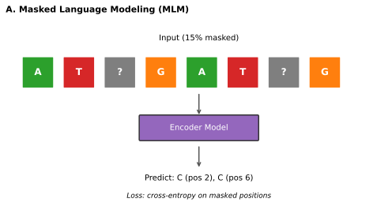
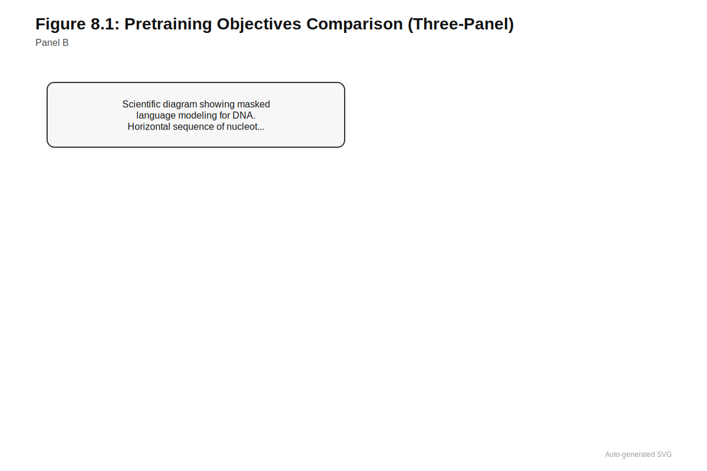
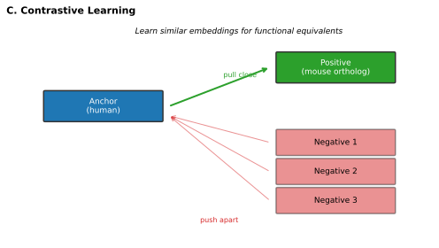
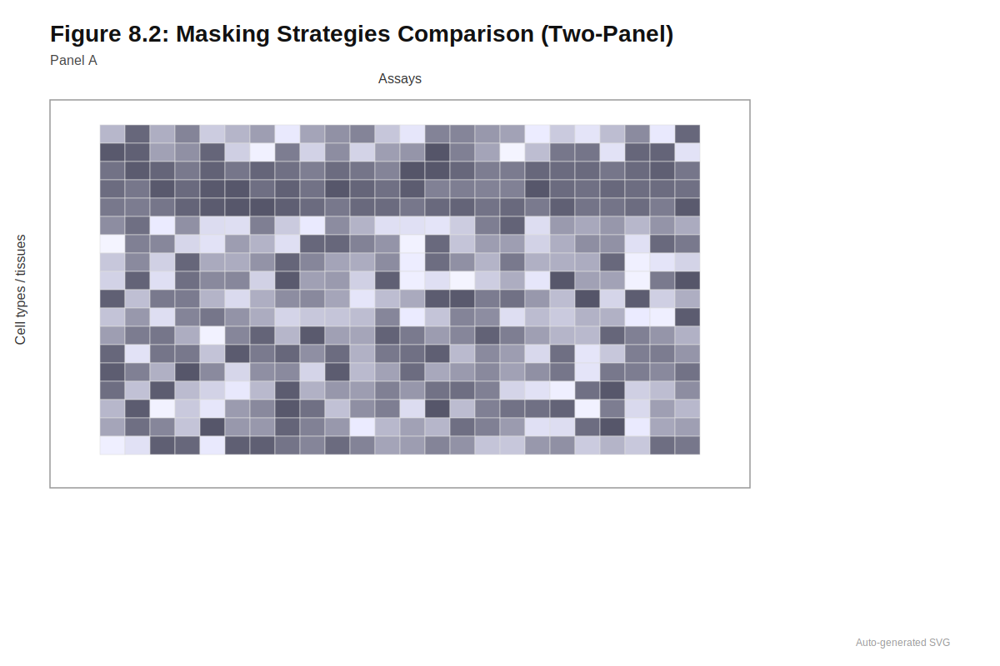
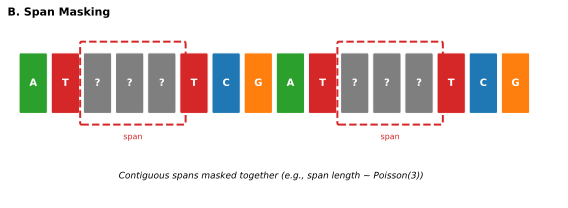
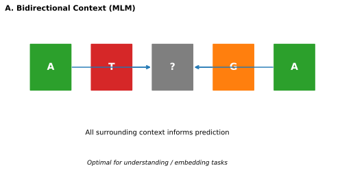
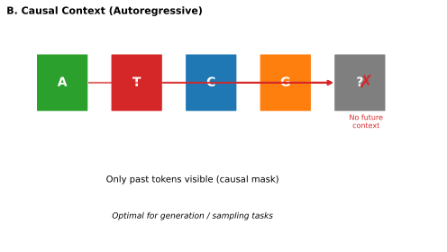
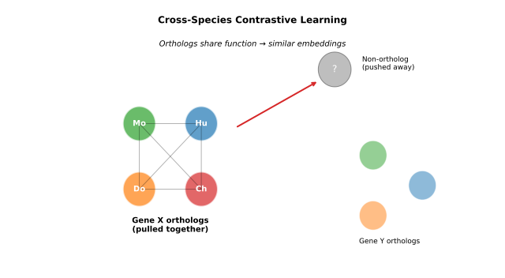
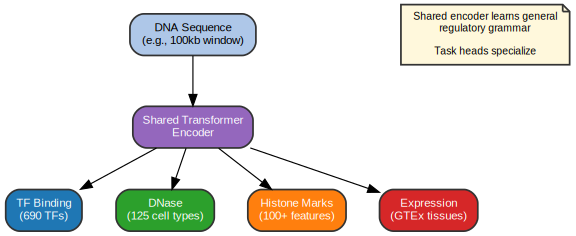
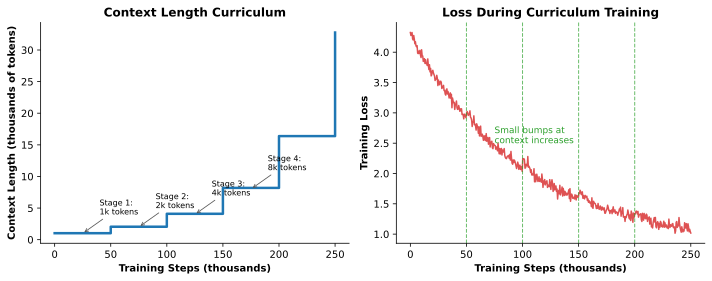

8 Pretraining Strategies
What you ask a model to predict during pretraining determines what it learns to see.
Estimated reading time: 35-45 minutes
Prerequisites: Before reading this chapter, you should be familiar with:
- Tokenization strategies for genomic sequences (Chapter 5)
- Attention mechanisms and transformer architecture (Chapter 7)
- Basic supervised learning concepts (loss functions, gradient descent)
Learning Objectives: After completing this chapter, you will be able to:
- Explain how masked language modeling, next-token prediction, and contrastive learning differ in what they teach models
- Select an appropriate pretraining objective based on downstream application requirements
- Describe how augmentation and corruption strategies improve model robustness
- Analyze tradeoffs between bidirectional understanding and generative capability
- Apply staged pretraining strategies to manage computational constraints
- Evaluate when multi-task pretraining provides benefits over single-task approaches
Clinical Relevance: The pretraining objective you choose determines whether your model excels at variant interpretation (requiring bidirectional context) or sequence design (requiring generation). Understanding these tradeoffs is essential for deploying foundation models in clinical genomics.
The choice of pretraining objective is not merely technical; it encodes assumptions about what matters in biological sequence. Masked language modeling encourages bidirectional context integration: the model learns to predict missing tokens using information from both upstream and downstream sequence. Next-token prediction builds autoregressive capabilities: the model learns to generate sequence one position at a time, enabling design of novel proteins or regulatory elements. Contrastive learning teaches invariance: the model learns that functionally equivalent sequences should map to similar representations regardless of species or polymorphism. Each objective produces a different model, and those differences propagate to downstream performance. A model pretrained with masked language modeling may excel at variant effect prediction (where context on both sides matters) but struggle at sequence generation. A model pretrained for generation may produce plausible sequences but provide representations less suited for classification tasks. Understanding what each objective teaches, and what assumptions each encodes, is prerequisite to selecting the right foundation model for a given application.
Self-supervised pretraining addresses a fundamental asymmetry in genomic data. Reference genomes span billions of nucleotides across thousands of species. Population sequencing projects catalog genetic variation in millions of individuals. Functional genomics consortia measure chromatin accessibility and gene expression across hundreds of cell types (see Chapter 2 for comprehensive treatment of these resources). Yet experimental labels remain sparse: for any given sequence, we typically lack direct measurements of its regulatory function, its effect on splicing, or its contribution to disease risk. Self-supervised objectives extract training signal from the sequences themselves, without requiring experimental labels. The resulting models learn representations that capture evolutionary constraints, sequence grammar, and functional relationships, all from the patterns present in unlabeled data. When these representations are applied to downstream tasks with limited labels, the pretrained knowledge makes scarce labeled data go further.



8.1 Masked Language Modeling
Consider predicting whether a splice site variant in DMD will cause exon skipping in Duchenne muscular dystrophy. The model must recognize the canonical GT-AG splice signals, encode how flanking sequences modulate splicing efficiency, and integrate information from both the upstream exon and downstream intron. A model trained only on labeled splice variants would see perhaps a few hundred DMD examples across the entire clinical literature. A model pretrained on billions of nucleotides learns splice grammar across the entire genome, then applies that knowledge to the specific clinical question. Masked language modeling provides this pretraining by teaching models to predict missing sequence content from surrounding context, and the bidirectional attention it requires captures exactly the upstream-downstream integration that splice prediction demands.
MLM treats sequences as partially observed and trains models to reconstruct missing content. The procedure is straightforward: randomly mask portions of an input sequence, feed the corrupted sequence to the model, and train the model to predict the original tokens at masked positions. A masking strategy replaces selected tokens with a special [MASK] token, leaving the surrounding context intact. The model processes the masked sequence through its layers and produces predictions for the masked positions, typically optimizing cross-entropy loss over the vocabulary at each masked location.
Consider this 12-nucleotide promoter fragment containing a TATA box:
Original sequence: GCTATAAAGCTT
Step 1 - Masking (15%): Randomly mask ~2 positions GCT[MASK]TAAGC[MASK]T
Step 2 - Model prediction: The model sees the masked sequence and, for each [MASK] position, outputs a probability distribution over {A, C, G, T}.
Step 3 - Loss computation: For position 4 (true answer: A), suppose the model predicts:
| Nucleotide | Probability |
|---|---|
| A | 0.70 |
| T | 0.20 |
| G | 0.05 |
| C | 0.05 |
Cross-entropy loss = \(-\log(0.70) = 0.36\)
What the model learns: Positions within TATA boxes strongly predict A/T nucleotides from surrounding context. After seeing millions of promoters, the model internalizes that sequences matching ...TAT_AA... almost always have A or T in the masked position—this is exactly the regulatory grammar that transfers to splice prediction and variant interpretation.
The key insight is that accurate prediction requires learning genuine sequence structure. To predict a masked position in a transcription factor binding site, the model must recognize the surrounding motif context. To predict masked splice donor sequences, the model must encode the consensus GT dinucleotide and the flanking patterns that modulate splicing strength. Over millions of training examples, models build distributed representations of motifs, compositional rules, and sequence constraints that transfer to tasks never seen during pretraining. The DMD splice variant can be evaluated using patterns learned from every splice site in the genome.
Before continuing, consider: If a model confidently predicts the masked nucleotides in a TATA box (high probability for A or T at each masked position), but struggles to predict nucleotides in a random intergenic region (nearly uniform probabilities), what does this tell you about functional constraint at these two locations?
MLM encourages bidirectional context integration, and this bidirectionality has direct clinical relevance. Unlike autoregressive models that condition only on preceding tokens, MLM models see both left and right context when predicting masked positions. For genomics, this matches biological reality: regulatory function depends on patterns both upstream and downstream of any given position. A transcription factor binding site is recognized through flanking sequences on both sides. Splicing signals require coordination between donor and acceptor sites separated by hundreds of bases. Missense variants disrupt protein function through effects that depend on the entire domain context, not just the preceding amino acids. The bidirectional attention mechanisms examined in Chapter 7 naturally capture these dependencies.
How would span masking (masking consecutive tokens) differ from random masking in terms of what the model learns? What biological sequences might benefit from each approach?
8.1.1 Masking Strategies and Their Implications


Before reading about span masking, consider: If you wanted a model to learn that transcription factor binding motifs function as units rather than as collections of independent nucleotides, how would you modify the masking strategy to force this understanding?
Predicting whether a regulatory variant disrupts an entire transcription factor binding site or merely alters its affinity requires models that learn compositional patterns, not just local nucleotide statistics. The tension between local and compositional learning plays out in masking strategy design.
Random masking of individual tokens creates predictions that are relatively local: each masked position can often be inferred from immediately adjacent nucleotides. This approach is efficient but may not force models to learn higher-order structure. Span masking, which masks contiguous blocks of tokens, forces models to infer longer-range dependencies and compositional patterns. If an entire transcription factor binding motif is masked, the model cannot rely on partial motif information and must instead recognize the motif’s role from surrounding regulatory context.
Why does span masking force compositional learning while random masking does not? When individual nucleotides are masked, adjacent positions provide strong local cues—if you see TATA_A, the missing position is almost certainly A or T based on TATA box grammar. But when an entire 6-bp motif is masked, those local cues vanish. The model must now ask: “Given that there’s an enhancer upstream and a core promoter downstream, what kind of regulatory element belongs here?” This requires learning which regulatory elements co-occur and why—the compositional grammar of regulation rather than mere nucleotide statistics. For clinical variant interpretation, span masking may better capture whether a regulatory variant disrupts an entire binding site or merely modulates its affinity.
Masking rates present a fundamental tradeoff between supervision density and prediction difficulty. Higher masking rates (30-40% of tokens) provide more supervision per sequence but make prediction harder and may destabilize training. Since each masked token becomes a prediction target, higher rates extract more learning signal from a single forward pass through the model. Lower masking rates (10-15%) produce more stable training but require more data to achieve equivalent coverage. The standard 15% rate from BERT represents a reasonable compromise, though genomic models have explored values ranging from 10% to 40% depending on context length and tokenization granularity (Devlin et al. 2019). DNABERT used 15% masking on 6-mer tokens, while later models have experimented with adaptive masking rates that increase as training progresses, starting conservatively and becoming more aggressive as the model’s predictions improve (Ji et al. 2021).
| Masking Strategy | Mechanism | Strengths | Limitations | Best For |
|---|---|---|---|---|
| Random token (15%) | Mask individual tokens uniformly | Simple, stable training, efficient | May learn only local patterns | General pretraining, limited compute |
| Higher rate (30-40%) | More tokens masked per sequence | More supervision signal per example | Harder optimization, may destabilize | Large datasets, robust architectures |
| Span masking | Mask contiguous blocks | Forces compositional learning | More complex implementation | Regulatory elements, motif grammar |
| Adaptive rate | Increase masking as training progresses | Curriculum effect, stable-to-aggressive | Requires tuning schedule | Long training runs |
Tokenization interacts with masking in ways that affect what biological patterns models learn (see Chapter 5 for comprehensive treatment of tokenization strategies). DNABERT pioneered MLM for genomic sequences by applying it to overlapping \(k\)-mer tokens: rather than treating DNA as individual nucleotides, DNABERT tokenizes sequences into all possible 6-mers with overlapping windows (Ji et al. 2021). Masking then operates at the \(k\)-mer level, with entire 6-mers masked as units. This design encourages learning of \(k\)-mer level patterns corresponding to transcription factor binding motifs (typically 6-12 base pairs) and other short functional elements. DNABERT-2 adopted byte-pair encoding (BPE) tokenization, which learns a vocabulary of variable-length subword units from the training corpus (Zhou et al. 2024). BPE tokens represent single nucleotides, common motifs, or repeated elements depending on their frequency. MLM with BPE balances flexibility with compositional structure, though the learned vocabulary may not align with biological functional units in interpretable ways.
The design decisions explored by DNABERT and DNABERT-2 established patterns that subsequent DNA language models have built upon and refined. Chapter 14 examines how these architectural and tokenization choices have evolved as the field has scaled to longer contexts and larger training corpora.
8.1.2 What Masked Language Models Learn
MLM objectives drive models to capture multiple levels of sequence organization, from local nucleotide statistics to long-range regulatory grammar. At the lowest level, models learn base composition and local constraints: CpG dinucleotide frequencies, GC content biases, and simple repeat patterns. These basic properties are necessary but not sufficient for biological function prediction.
At higher levels, MLM captures motif patterns and sequence grammar. Predicting masked positions in regulatory regions requires recognizing transcription factor binding sites, understanding how motifs combine in enhancers and promoters, and learning context-dependent usage patterns. If certain transcription factor motifs co-occur at specific distances (as they do in developmental enhancers where factors like HOX proteins bind cooperatively), masking one motif and predicting it from the other reinforces this grammatical relationship. This compositional learning is difficult to achieve with supervised learning alone, which typically provides coarse binary labels (“enhancer” versus “non-enhancer”) rather than fine-grained structural information about sequence organization.
Pause and recall: What are the three main levels of sequence organization that MLM objectives help models learn? How does each level contribute to downstream variant interpretation tasks?
MLM also captures evolutionary conservation patterns implicitly, and this has direct relevance for clinical variant interpretation. Conserved sequences are constrained because mutations would disrupt function. By learning to predict conserved patterns from surrounding context, models encode which sequence features are under selection. This knowledge transfers to variant effect prediction, where the model recognizes when a mutation disrupts a learned conserved pattern. A variant that replaces a highly predictable position (one the model confidently fills in during MLM) is more likely to be damaging than one at a position where the model is uncertain. The connection between pretraining on raw sequence and downstream variant interpretation illustrates how self-supervised objectives capture biologically meaningful structure without explicit functional labels. The variant effect prediction approaches in Chapter 17 leverage these learned patterns directly, while probing methods (Section 9.3) reveal what specific patterns models have captured.
8.2 Next-Token Prediction
Designing a novel promoter sequence for gene therapy requires generating DNA that respects learned regulatory grammar while achieving specific expression characteristics. Masked language modeling can evaluate whether a candidate sequence looks “natural,” but it cannot generate sequences from scratch. A gene therapy team optimizing a CAR-T construct needs promoter variants to test; they cannot simply evaluate candidates one by one when the search space spans \(4^{500}\) possible 500-base-pair sequences. Next-token prediction provides the generative capability missing from MLM, learning to predict each token given only preceding tokens and thereby acquiring the ability to sample coherent novel sequences that respect learned biological constraints.
Next-token prediction represents an alternative paradigm where models learn to predict each token in a sequence given only the preceding tokens. The intuition is familiar from everyday experience: predicting the next word in “The cat sat on the…” is easier than predicting a word from the middle of a sentence, because you have a clear thread of context leading up to the prediction point. Weather forecasting works similarly—tomorrow’s weather is predicted from today’s conditions, and next week’s weather is predicted by chaining together day-by-day forecasts. This autoregressive approach, popularized by GPT-style language models, treats sequence generation as a core capability rather than a secondary feature.
For a sequence of length \(T\), the model predicts token \(t\) from tokens \(1\) through \(t-1\), maximizing the likelihood of the observed sequence under the model’s learned distribution. The probability of a sequence factors as the product of conditional probabilities for each token given its predecessors—just as the probability of a week’s weather is the product of each day’s probability given the preceding days:
\[P(x_1, x_2, \ldots, x_T) = \prod_{t=1}^{T} P(x_t \mid x_1, \ldots, x_{t-1})\]
The autoregressive factorization above is exact by the chain rule of probability. However, it requires choosing an ordering over tokens. For natural language, left-to-right reading order provides a natural choice. For DNA, there is no inherent directionality, which presents a challenge discussed below.
Algorithmically, next-token prediction requires causal masking in the attention mechanism. Each position attends only to earlier positions, ensuring predictions at position \(t\) depend exclusively on positions \(1\) through \(t-1\). Why enforce this restriction during training when we have access to the full sequence? The constraint ensures that the model learns exactly the conditional distributions it will use during generation. If training allowed each position to peek at future tokens, the model would learn different representations than what it needs when generating novel sequences where future tokens do not yet exist. This alignment between training and inference is what makes autoregressive generation principled rather than ad hoc. The loss function is cross-entropy over the vocabulary, computed at every position rather than only at masked locations. During training, teacher forcing allows efficient parallel computation: the model predicts all positions simultaneously by feeding in the ground truth sequence shifted by one position. Generation at inference time is inherently sequential, predicting one token at a time and conditioning each prediction on all previous outputs.
Autoregressive models develop systematic positional bias during training. Early positions in a sequence are predicted from minimal context: the first token has no conditioning information at all, the second token conditions only on the first, and so on. Later positions benefit from increasingly rich context as the full preceding sequence informs each prediction. This creates asymmetric representation quality across the sequence, with early positions learned less reliably than later ones. For natural language, this asymmetry is partially justified by syntactic structure (sentence openings are more formulaic than continuations), but genomic sequences have no such directional bias. Position 1 of a regulatory element carries as much functional information as position 500. Training dynamics that systematically disadvantage early positions introduce artifacts unrelated to biology.
Several strategies mitigate positional bias. Training on both forward and reverse-complement sequences ensures that each position appears early in some training examples and late in others, averaging out directional effects. Prefix conditioning provides bidirectional context for an initial segment before autoregressive generation begins, giving all generated positions access to rich conditioning information. Some architectures incorporate bidirectional “warm-up” layers before causal attention, building position-independent representations that subsequent autoregressive layers can condition on. The severity of positional bias depends on sequence length and model capacity; for short sequences (under 1000 tokens), the effect is modest, but for genome-scale contexts exceeding 100 kilobases, early positions may be substantially underrepresented in learned distributions.
The fundamental difference from MLM lies in what the model can see during prediction. Autoregressive models build representations from unidirectional context, learning to generate sequences that respect learned constraints. This makes autoregressive pretraining attractive for sequence design applications (see Chapter 30). Sampling new sequences proceeds naturally: predict the first token, condition on it to predict the second, and continue token by token. The generation process directly uses the learned conditional distributions without requiring additional architectural modifications or iterative refinement procedures.
8.2.1 Genomic Applications
DNA sequences present a complication that natural language does not: they have no inherent directionality. Both strands encode information, and regulatory function is often strand-agnostic. A transcription factor binding site functions identically whether read 5’-to-3’ or on the reverse complement strand. This contrasts with natural language, where left-to-right reading order carries meaning. Early autoregressive genomic models addressed this by training separate models for forward and reverse strands or by augmenting training data with reverse-complement sequences. More recent approaches treat strand symmetry as an architectural constraint, ensuring that forward and reverse complement sequences produce equivalent representations through weight sharing or explicit symmetrization.
Evo represents a large-scale autoregressive genomic model trained on whole genomes with long-context architectures (Nguyen et al. 2024). Using StripedHyena layers to achieve contexts exceeding 100 kilobases, Evo learns long-range dependencies including gene structure, repeat organization, and regulatory architecture spanning tens of kilobases. This enables generating coherent synthetic genomes that respect higher-order structure, not just local motif patterns. For therapeutic applications, Evo’s generative capability could design synthetic regulatory circuits, generate diverse candidate sequences for directed evolution, or produce training data through synthetic augmentation when real labeled data is scarce. The Evo architecture is examined in detail in Chapter 14, while sequence design applications are treated in Chapter 30.
Protein sequence models trained autoregressively typically generate N-terminus to C-terminus, matching ribosomal synthesis and co-translational folding. Whether this biological asymmetry meaningfully improves learned representations remains unclear: autoregressive models learn conditional sequence distributions, not physical processes, and bidirectional masked language models like ESM-2 perform excellently despite having no inherent directionality. For design applications, generation direction is likely a second-order effect. ESM models and protein design systems like ProtGPT2 predict amino acid sequences autoregressively, learning protein grammar and evolutionary constraints that transfer to structure prediction and function annotation (Ferruz, Schmidt, and Höcker 2022). For designing therapeutic proteins (antibodies, enzymes, peptide drugs), autoregressive generation produces candidates that respect learned constraints on foldability and function. Chapter 15 examines these protein language models in detail.
8.3 MLM and Autoregressive Comparison


A researcher wants to predict whether a missense variant in the middle of a protein domain is pathogenic. They need to assess how the variant disrupts interactions with residues both before and after it in the sequence. Which pretraining objective would provide better representations for this task, and why?
Masked language modeling (MLM) would provide better representations for this task. MLM uses bidirectional attention, allowing the model to integrate information from both upstream and downstream residues when evaluating the variant’s impact. Since pathogenicity depends on how the variant disrupts interactions with the entire domain (both before and after the mutation), having access to full sequence context produces richer representations than autoregressive models, which only see preceding residues.
The tension between bidirectional understanding and generative capability represents the fundamental tradeoff between these objectives. For tasks requiring understanding of full sequence context, MLM’s bidirectional attention provides richer representations. Predicting transcription factor binding at a specific location benefits from seeing both upstream and downstream sequence, information that autoregressive models cannot access during inference. Variant effect prediction similarly benefits from full context: a missense variant’s impact depends on the entire domain, not just the preceding residues.
Autoregressive models offer more principled generation. Their sequential prediction structure matches the generation process exactly, whereas generating from MLM models requires iterative masking and filling procedures that were not part of pretraining. A promoter design task using MLM would require starting with random sequence, masking positions, predicting fills, remasking, and iterating until convergence. This procedure is ad hoc and may not produce sequences that lie on the learned distribution. Autoregressive generation is direct: sample token by token from learned conditionals.
Task-specific performance depends on alignment between pretraining and downstream objectives. If the downstream task involves predicting missing information from context (variant effect prediction, binding site identification, conservation scoring), MLM pretraining provides better transfer. If the downstream task involves generation or sequential decision-making (sequence design, sampling from conditional distributions, therapeutic protein generation), autoregressive pretraining aligns more naturally.
Training efficiency differs between objectives in ways that affect practical decisions. MLM predicts only 15% of tokens per sequence but uses bidirectional context for each prediction. Autoregressive models predict all tokens but with unidirectional context. The effective supervision per sequence is higher for autoregressive training, but each prediction is less informed. For fixed compute budgets, the tradeoffs roughly balance, with optimal choice depending on downstream applications rather than training efficiency alone.
| Criterion | MLM (BERT-style) | Autoregressive (GPT-style) |
|---|---|---|
| Context available | Bidirectional (full sequence) | Unidirectional (preceding only) |
| Primary strength | Understanding, classification | Generation, sampling |
| Supervision per sequence | ~15% of tokens | 100% of tokens |
| Strand symmetry | Natural (no ordering) | Requires augmentation |
| Variant effect prediction | Strong (sees flanking context) | Weaker (misses downstream) |
| Sequence design | Iterative, ad hoc | Direct sampling |
| Layer selection for embeddings | Final layer typically best | Intermediate layers often better |
| Example models | DNABERT, ESM-2 | Evo, ProtGPT2 |
This alignment extends beyond task type to affect how practitioners extract and use model representations. Encoder models trained with MLM produce final-layer embeddings that work reliably across diverse downstream tasks because the pretraining objective shaped representations for general utility. Decoder models trained with next-token prediction specialize their final layers for vocabulary prediction, often making intermediate layers superior for classification and regression tasks. This layer hunting problem adds hyperparameter search burden when using decoder models for non-generative applications, sometimes requiring evaluation across all layers to identify where task-relevant information concentrates. The practical implications for model deployment are examined in ?sec-ch09-layer-selection.
8.3.1 Hybrid Architectures
The dichotomy between MLM and autoregressive objectives is not absolute. Hybrid architectures attempt to capture bidirectional understanding while retaining generative capability, though they add complexity and training cost.
Permutation language modeling, introduced in XLNet, trains on all possible token orderings rather than a fixed left-to-right sequence (yang_xlnet_2019?). For each training example, the model samples a random permutation of positions and predicts tokens in that order, with each position attending only to positions earlier in the sampled permutation. Across many permutations, every token eventually conditions on every other token, achieving bidirectional context in expectation while maintaining autoregressive structure for any single forward pass. The approach is elegant but computationally expensive: the permutation sampling and bookkeeping add overhead, and generation still requires committing to a specific ordering. For genomic applications, permutation LM could address strand symmetry naturally (forward and reverse orderings are equally likely), but implementations remain rare in the biological literature. One example is ProtXLNet examined in ?sec-ch12-alternative-architectures.
Prefix language modeling offers a more practical hybrid. The model processes an initial prefix bidirectionally, building rich contextualized representations, then switches to autoregressive generation for the remainder. This architecture underlies encoder-decoder models like T5 and has been adapted for protein design, where a conditioning context (desired function, scaffold structure, or homologous sequences) is encoded bidirectionally before generating novel sequence autoregressively. ProGen2 applies this pattern to conditional protein generation, encoding functional annotations or partial sequences as prefix context before sampling completions (nijkamp_progen2_2023?). The prefix provides the “understanding” that guides generation, combining MLM-style bidirectional encoding where context is known with autoregressive sampling where novelty is needed. For therapeutic design, this enables specifying desired properties (binding target, expression level, stability) as encoded context while generating diverse candidate sequences that respect those constraints.
The cost of hybrid approaches is architectural complexity and training overhead. Pure MLM and pure autoregressive models have simpler implementations and clearer training dynamics. Whether the benefits of hybridization justify the costs depends on application requirements: tasks demanding both rich understanding and flexible generation may warrant the complexity, while tasks emphasizing one capability over the other are better served by the appropriate pure objective.
8.4 Span Corruption and Denoising
Clinical variant interpretation must be robust to sequencing errors, population polymorphisms, and batch effects between discovery and validation cohorts. A pathogenic variant identified in a research study must remain classifiable as pathogenic when sequenced on a different platform in a clinical laboratory, surrounded by different technical artifacts and population-specific polymorphisms. A model trained only on pristine reference sequence may fail when encountering the noise and variation present in real patient data. Denoising objectives address this by training models on corrupted inputs, building tolerance to the kinds of perturbations that occur in clinical genomics pipelines.
Span corruption generalizes masked language modeling by introducing more complex forms of input degradation. The T5 model popularized this approach for natural language (Raffel et al. 2023), and the principles transfer to genomic sequences with biological adaptations. Rather than masking individual tokens, span corruption masks contiguous spans of variable length and replaces each span with a single sentinel token. The model then generates the original content of all masked spans in sequence, learning to reconstruct substantial missing regions rather than isolated positions.
This objective teaches different aspects of sequence structure than standard MLM. Reconstructing entire spans requires understanding longer-range dependencies and compositional patterns. If a span encompasses an entire transcription factor binding motif (typically 6-12 base pairs), the model cannot infer the motif from partial information and must instead reason about the motif’s role from surrounding regulatory context. Span lengths are typically sampled from a distribution (geometric or uniform) with a mean around 3-5 tokens, creating a mix of short and long reconstruction challenges within each training example.
8.4.1 Corruption Beyond Masking
Real clinical sequencing data contains substitution errors, missing bases, and spurious insertions that simple masking does not prepare a model to handle. If a model has only ever seen clean reference sequence with masked positions, will it recognize a pathogenic variant when the surrounding bases contain sequencing errors? Training with diverse corruption strategies builds the robustness that clinical deployment demands.
Denoising objectives extend beyond masking to include other forms of corruption that mirror real-world data degradation. Token substitution replaces input tokens with random tokens from the vocabulary, creating corrupted sequences that resemble sequencing errors or natural variation. The model learns to distinguish correct from incorrect tokens based on surrounding context, encouraging representations that capture local consistency and motif structure. Deletion and insertion corruptions remove or add tokens at random positions, teaching models about position-invariant features that remain identifiable despite surrounding changes. For genomics, insertions and deletions are biologically realistic mutation types (indels account for approximately 15% of pathogenic variants in ClinVar (Landrum et al. 2018)), and models that handle them during pretraining may better predict their effects downstream.
8.4.2 Biologically Motivated Corruption
The most effective corruption strategies mirror actual sources of noise in clinical genomics data. Simulating sequencing errors provides corruption strategies that match experimental reality. Base miscalls follow platform-specific patterns: Illumina sequencing shows characteristic substitution biases (favoring certain nucleotide transitions over transversions, with error rates of 0.1-1% depending on read position and quality score), while nanopore sequencing exhibits distinct error profiles concentrated in homopolymer regions where the signal for consecutive identical bases becomes ambiguous [Citation Needed]. Training with corruptions that mimic these error patterns may improve generalization to real sequencing data with platform-specific artifacts. The sequencing technologies producing these error patterns are examined in Chapter 1, while the confounding effects of platform-specific artifacts on model evaluation appear in Chapter 12.
Variant augmentation introduces biologically realistic sequence changes based on population variation. Randomly substituting alleles at known polymorphic sites or injecting variants from databases like gnomAD creates corrupted sequences reflecting natural genetic diversity (Karczewski et al. 2020). This teaches models that common polymorphisms are normal variation rather than errors to be corrected, potentially improving robustness for variant effect prediction where distinguishing pathogenic variants from benign polymorphisms is the central challenge. A model trained only on reference sequence might flag any deviation as potentially damaging; a model trained with variant augmentation learns which deviations are within normal population variation.
Structural variation simulation models larger-scale genomic changes: tandem duplications, copy number variation, and segmental rearrangements. These corruptions are harder to implement but capture realistic sources of genomic diversity beyond single-nucleotide changes. Models trained with structural variation corruptions may better understand how gene dosage changes, enhancer duplications, or domain boundary disruptions affect function. For clinical applications involving copy number variants (which underlie conditions ranging from developmental disorders like DiGeorge syndrome to cancer predisposition in hereditary breast cancer), this training signal could improve predictive accuracy.
The benefit of denoising pretraining extends to robustness under distribution shift. If downstream applications involve sequences from different populations, experimental platforms, or tissue contexts than the pretraining corpus, models pretrained with appropriate corruptions can maintain performance despite distribution mismatch. This matters in clinical genomics, where validation cohorts often differ from discovery cohorts in ancestry composition, sequencing technology, or phenotyping protocols. A model trained with corruptions spanning these sources of variation generalizes more reliably than one trained only on pristine reference sequence. The confounding and evaluation challenges arising from such distribution shifts are examined in Chapter 12 and Chapter 12.
8.5 Contrastive Learning
Cross-population generalization presents a persistent challenge in clinical genomics. A variant classifier trained on European ancestry cohorts may perform poorly on African ancestry patients due to different patterns of linkage disequilibrium and background polymorphism. The classifier learned to recognize pathogenic variants against a European genetic background; African genomes present the same functional variants but surrounded by different neutral polymorphisms. Contrastive learning addresses this by teaching models to recognize functional equivalence despite sequence-level differences, producing representations where a regulatory element is recognizable regardless of the population-specific variants surrounding it.
Before reading further, consider: If you wanted to train a model that recognizes a CTCF binding site as functionally equivalent whether it appears in a European or African genome, what kind of training pairs would you construct? What should be “similar” and what should be “different”?
Contrastive learning takes a fundamentally different approach to self-supervised pretraining than reconstruction-based objectives. Rather than recovering corrupted inputs, contrastive objectives train models to produce similar representations for different views of the same sequence while distinguishing them from representations of unrelated sequences. The intuition is that augmented versions of a sequence (with minor corruptions, reverse complementation, or variants) should map to nearby points in representation space, while unrelated sequences should map to distant points. This teaches invariance to transformations that do not change function.
The algorithmic framework constructs positive pairs and negative samples. For a given anchor sequence, positive pairs are created through augmentation: reverse complementation, random cropping, variant injection, or other transformations that preserve functional identity. Negative samples are drawn from other sequences in the training batch. The model produces embeddings for all sequences, and the contrastive loss encourages anchor and positive embeddings to be similar (high cosine similarity) while pushing apart anchor and negative embeddings.
InfoNCE loss is the most common contrastive objective (Oord, Li, and Vinyals 2019). The intuition is like a matching game: given a photo of a person (the anchor), you must identify which of several voice recordings belongs to the same person (the positive) among many strangers’ voices (the negatives). The loss function rewards correctly matching anchor to positive while distinguishing them from negatives. For an anchor embedding \(z_i\) and positive embedding \(z_i^{+}\), InfoNCE maximizes:
\[ \mathcal{L} = -\log \frac{\exp\!\left(z_i \cdot z_i^{+} / \tau\right)}{\sum_{j} \exp\!\left(z_i \cdot z_{j} / \tau\right)} \]
where the sum runs over the positive and all negative samples, and \(\tau\) is a temperature parameter controlling the sharpness of the distribution. Why take this particular mathematical form? The objective frames contrastive learning as a classification problem: given the anchor, identify which of the many candidates is the true positive pair. The softmax structure ensures the model can only increase the score for the positive pair by simultaneously decreasing scores for negatives, forcing it to learn discriminative features rather than simply inflating all similarity scores. The temperature \(\tau\) controls how harshly the model is penalized for near-misses. Lower temperatures make the model more discriminative, requiring cleaner separation between positives and negatives; a low temperature means that even small differences in similarity are amplified into large differences in the loss. The objective is equivalent to classifying the positive pair among all possible pairs, and the model learns representations that make this classification easy.
8.5.1 Augmentation Design for Genomic Sequences
If you pair a sequence with its reverse complement and call them “similar,” the model learns strand symmetry. If you pair a sequence with itself plus a common SNP and call them “similar,” the model learns robustness to population variation. The augmentations you choose define what “similarity” means, and therefore what invariances your model acquires. Choosing the wrong augmentations teaches the model to ignore differences that actually matter.
A CTCF binding site must be recognizable whether it appears on a European or African genetic background, whether read on the forward or reverse strand, and whether the surrounding sequence contains common polymorphisms or reference alleles. Augmentation design is critical for contrastive learning because augmentations must preserve functional identity while introducing variability. If augmentations change function, the contrastive objective will learn meaningless invariances. Several augmentation strategies are biologically grounded and preserve the functional relationships that matter for downstream clinical applications.
The double-stranded nature of DNA provides the simplest and most reliable augmentation. Many regulatory elements function identically on either strand, and a model that fails to recognize this symmetry has learned an incomplete representation of genomic function. Reverse complementation trains the model to treat forward and reverse complement sequences as equivalent, capturing strand symmetry inherent in molecular biology. This augmentation is universally applicable and introduces no risk of changing functional identity; a TATA box is a TATA box regardless of which strand is reported.
Position invariance presents a subtler challenge. A transcription factor binding site should be recognizable regardless of where it falls within an input window, yet models naturally learn position-specific features. Random cropping addresses this by extracting overlapping windows from longer sequences. If a binding site appears in multiple cropped windows at different positions, the model learns that the site itself is the functionally relevant feature, not its coordinates. This proves particularly useful for tasks where genomic location matters less than local sequence content. The augmentation also provides practical benefits: a single long sequence becomes many training examples, increasing effective data diversity without collecting new data.
Population diversity creates perhaps the most clinically consequential augmentation challenge. A classifier trained only on reference sequence may treat any deviation as potentially significant, when in fact most human genetic variation is neutral. Variant injection addresses this by introducing common polymorphisms or simulated mutations as augmentation. If the variants are neutral (common variants from gnomAD with high allele frequency, which are unlikely to be damaging; see Chapter 2 for gnomAD resource details), treating variant and reference sequences as positive pairs teaches robustness to genetic background. This is particularly valuable for cross-population generalization, where models must recognize functional elements despite surrounding sequence polymorphism that differs between ancestry groups. A model trained with variant augmentation learns that a CTCF binding site is functionally equivalent whether it appears on European or African genetic background.
| Augmentation Type | How It Works | Invariance Taught | Clinical Relevance |
|---|---|---|---|
| Reverse complement | Swap strand, reverse sequence | Strand symmetry | TF binding orientation-agnostic |
| Random cropping | Extract overlapping windows | Position invariance | Motif recognition anywhere in window |
| Variant injection | Insert common polymorphisms | Population robustness | Cross-ancestry generalization |
| Nucleotide substitution | Random base changes | Noise tolerance | Sequencing error robustness |
| Ortholog pairing | Pair sequences across species | Species invariance | Model organism to human transfer |
The choice of negative samples shapes what distinctions the model learns to make. Random genomic sequences provide straightforward negatives but may be too easy to distinguish: any functional regulatory sequence is readily separable from random intergenic sequence. Harder negatives force more informative learning. Sequences from paralogous genes share evolutionary history but have diverged in function; distinguishing them requires learning subtle functional signatures. Pseudogenes resemble their functional counterparts but lack activity; recognizing this difference teaches the model what makes a gene functional. Orthologous regions in distant species test whether the model has learned species-invariant features. The difficulty of negatives should match the granularity of distinctions required for downstream tasks.
8.5.2 Cross-Species Contrastive Learning

Leveraging evolutionary relationships for self-supervision enables a distinctive form of contrastive learning. Orthologous sequences from different species share functional identity despite nucleotide divergence accumulated over millions of years of evolution. Treating orthologous pairs as positives and non-orthologous pairs as negatives teaches the model to extract species-invariant functional features. A human enhancer and its mouse ortholog should map to similar embeddings despite 75 million years of sequence divergence, while unrelated sequences should map to distant embeddings.
This approach has direct implications for drug development and therapeutic translation. Many drug targets are validated in mouse models before human clinical trials; roughly 95% of cancer drugs that succeed in mouse models fail in human trials, often because the models do not adequately capture human biology [Citation Needed]. A model pretrained with human-mouse contrastive pairs may generalize better to predicting drug response in humans based on mouse efficacy data, or to transferring regulatory circuit designs from model organisms to human cell types. The evolutionary record provides implicit labels about functional equivalence that would be expensive to obtain through direct experimental annotation.
Sequence embedding quality improves with contrastive pretraining in ways that benefit clinical applications. Models trained contrastively produce embedding spaces where functionally similar sequences cluster together, enabling nearest-neighbor search for annotating novel variants (finding similar characterized variants), sequence retrieval for identifying regulatory homologs, and unsupervised clustering of regulatory elements. For variant effect prediction, contrastive pretraining improves robustness: if the model learns that sequences differing only by neutral variants are functionally equivalent, it will better distinguish truly disruptive variants from benign polymorphisms.
8.6 Multi-Task Pretraining
Predicting variant pathogenicity requires integrating multiple lines of evidence: evolutionary conservation, protein structure effects, splicing changes, and regulatory disruption. A variant in TTN (the gene encoding titin, mutated in 25% of dilated cardiomyopathy cases [Citation Needed]) might be pathogenic because it disrupts protein folding, because it alters splicing, or because it affects regulatory binding sites. No single assay captures all these dimensions. Multi-task pretraining addresses this by jointly optimizing for diverse prediction tasks, learning representations that capture the multiple facets of genomic function relevant to clinical interpretation.
Multi-task pretraining combines multiple related objectives during the same training run, jointly optimizing for several prediction tasks. Different tasks provide complementary supervision signals: masking captures local sequence patterns, chromatin prediction captures regulatory function, conservation scoring captures evolutionary constraint, and expression prediction captures transcriptional consequences. Representations that satisfy all tasks simultaneously develop richer and more general features than any single objective alone.
8.6.1 Task Selection and Architecture
A model trained to predict chromatin accessibility learns different features than one trained to predict gene expression, even from identical sequences. Add evolutionary conservation prediction, and the representations shift again. The tasks you choose for multi-task pretraining determine what biological signals your model captures, so how do you select the right combination?
The first design decision is which tasks to include. Ideally, tasks should be diverse enough to provide distinct supervision signals but related enough to benefit from shared representations. For genomic models, effective combinations include masked language modeling for general sequence structure, chromatin accessibility prediction for regulatory function, gene expression prediction for transcriptional output, evolutionary conservation scoring for functional constraint, and variant frequency prediction from population databases. Each task operates on the same input sequence but predicts different outputs using task-specific head layers. The shared backbone encoder processes the sequence into intermediate representations, and separate prediction heads map these representations to task-specific outputs.
8.6.2 Loss Weighting and Balancing
Training a model on five tasks sounds straightforward until you discover that chromatin accessibility loss is ten times larger than expression prediction loss, causing the model to optimize almost exclusively for chromatin while ignoring expression. Worse, the expression task may actually be more important for your downstream clinical application. How you weight the contribution of each task to the total loss can make or break multi-task pretraining.
Once tasks are selected, their relative contributions to the total loss must be determined. This is a significant source of training instability and requires careful tuning.
With \(\mathcal{L}_1, \ldots, \mathcal{L}_K\) representing individual task losses, the multi-task loss combines them:
\[\mathcal{L}_{\text{total}} = \sum_{k=1}^K w_k \mathcal{L}_k\]
where w_k are task weights. Why not simply sum losses with equal weights? Different tasks operate at fundamentally different scales. A regression task predicting gene expression might have losses in the range of 0.1-1.0, while a classification task predicting binary binding states might have losses ranging from 0.01-0.1 depending on class balance. Without weighting, the high-loss task dominates gradient updates, effectively ignoring the signal from other tasks. Even with similar loss scales, tasks differ in how quickly they are learned. If one task converges rapidly while another requires extended training, equal weighting means the converged task continues providing gradient signal that may interfere with learning the harder task. Dynamic weighting approaches address this by adjusting weights during training based on learning progress, using uncertainty estimation, gradient norms, or task-specific validation performance as signals for rebalancing. Uncertainty-based weighting learns task weights as parameters, treating high-loss tasks as inherently more uncertain and down-weighting their contribution. Gradient-based methods normalize gradients across tasks to prevent any single task from dominating updates.
8.6.3 Large-Scale Multi-Task Examples
Enformer exemplifies large-scale multi-task pretraining for genomics (Avsec et al. 2021). The model predicts over 5,000 genomic assays simultaneously: ChIP-seq signals for hundreds of transcription factors and histone marks, DNase-seq and ATAC-seq accessibility across cell types, CAGE transcription initiation profiles, and more. This massive multi-task objective (covering 674 DNase-seq, 4,675 ChIP-seq, and 638 CAGE experiments from ENCODE and Roadmap Epigenomics (Kagda et al. 2025)) forces the model to learn representations capturing diverse regulatory signals.
The task diversity in Enformer provides supervision far richer than any single assay. A model trained only on DNase-seq learns general accessibility patterns but misses transcription factor specificity: it cannot distinguish which factors bind to accessible regions. A model trained only on H3K27ac ChIP-seq captures active enhancers but misses repressive marks that indicate silenced regulatory elements. Training on all assays jointly allows the model to disentangle overlapping and complementary signals, learning representations that generalize across regulatory contexts. For clinical variant interpretation, this means Enformer can predict how a regulatory variant affects enhancer activity, chromatin state, transcription factor binding, and gene expression simultaneously. Chapter 16 examines Enformer and related regulatory models in detail.

Borzoi extends this paradigm to full RNA-seq coverage prediction, jointly modeling transcription initiation, splicing, and transcript abundance (Linder et al. 2025). By predicting continuous coverage across gene bodies rather than just expression levels, Borzoi captures splicing patterns that are invisible to models predicting only total expression. This has direct clinical relevance: many pathogenic variants act through splicing disruption rather than protein-coding changes, and models that capture splicing patterns can identify variants that traditional expression-based approaches miss.
Combining MLM with functional prediction represents another multi-task configuration. The model predicts masked tokens through a language modeling head while simultaneously predicting chromatin accessibility or other functional readouts through regression heads. This hybrid objective balances sequence-level pretraining with functional supervision. The MLM component ensures the model learns general sequence patterns even in regions without functional annotations (the majority of the genome lacks chromatin or expression measurements in any given cell type), while the functional prediction component focuses learning on biologically relevant features.
8.6.4 When Multi-Task Learning Fails
More tasks should mean more learning signal, so why does adding a third task sometimes make performance on the original two tasks worse? Multi-task learning can fail in surprising ways, and understanding these failure modes is essential before committing computational resources to joint training.
Consider two tasks: (1) predicting splice site usage from a 20bp window, and (2) predicting enhancer-promoter interactions from a 200kb window. Why might jointly training these tasks hurt performance on both compared to training them separately? What property of representations might create conflict?
Task interference presents the primary concern with multi-task learning. If tasks require conflicting representations, jointly optimizing for both may compromise performance on each compared to single-task baselines. In genomics, this might occur if one task benefits from very local features (splice site prediction, which depends on short consensus sequences spanning roughly 10 base pairs) while another requires long-range context (enhancer activity prediction, which depends on distant promoter interactions spanning 100 kilobases). The shared backbone must compromise, potentially learning suboptimal representations for both.
Negative transfer occurs when adding a task actually hurts downstream performance compared to training without it. This can happen if the additional task introduces noise (poorly measured assays with high experimental variance), if task weights are poorly balanced (causing one task to dominate gradients), or if the auxiliary task shifts learned representations away from features useful for target applications. The risk of negative transfer increases with task diversity: distantly related tasks are more likely to require conflicting representations.
The benefits of multi-task pretraining are largest when tasks are complementary and data for individual tasks is limited. If chromatin data is sparse for a particular cell type but gene expression data is abundant, jointly training on both may improve performance on both compared to single-task models. The shared representations allow information to flow between tasks, compensating for data scarcity in any single modality. When functional labels exist at scale and tasks are genuinely related, multi-task pretraining consistently outperforms single-task alternatives.
8.7 Staged Pretraining Strategies
Training a foundation model in a single phase rarely produces optimal results. The computational constraints that make pretraining expensive also make experimentation prohibitive: once committed to training at scale, practitioners cannot easily adjust hyperparameters, data mixtures, or objectives mid-run. Staged pretraining addresses this by decomposing training into sequential phases, each optimized for different learning goals. A model might learn basic sequence statistics from shorter contexts before extending to long-range dependencies, or acquire general sequence grammar before specializing to regulatory regions. These staged approaches improve both training stability and final model quality compared to monolithic training on the full data and context from the start.
The biological rationale mirrors curriculum learning in human education: master fundamentals before tackling advanced material. A medical student learns anatomy before pathology; a genomic model might learn local motif structure before enhancer-promoter interactions spanning 100 kilobases. When HyenaDNA attempted direct training on million-base contexts, optimization diverged. Progressive context extension, starting at shorter windows and gradually increasing, proved essential for stable learning (Nguyen et al. 2023). This curriculum effect appears across architectures: the structure of what is learned first shapes what can be learned later.
8.7.1 Context Length Curricula
An enhancer 50 kilobases from its target promoter can only be modeled if the context window spans that entire distance. But training directly on 100-kilobase sequences often fails: the optimization diverges, the model never converges, and weeks of compute are wasted. How do you build a model that understands long-range regulatory interactions when training on long sequences is so unstable?
Long-range genomic dependencies present a fundamental training challenge. Attention mechanisms scale quadratically with context length, making training on long sequences orders of magnitude more expensive than short sequences. Beyond computational cost, optimization dynamics change with context length: models processing thousands of tokens face different gradient distributions than those processing hundreds. Context length curricula address both challenges by training first on tractable short contexts, then progressively extending to longer sequences.
HyenaDNA exemplifies this approach. Initial pretraining used contexts of a few thousand bases, allowing rapid iteration through the genome and stable optimization. As training progressed, context windows expanded through intermediate stages (8 kilobases, then 32 kilobases) until reaching the target of one million bases. Each stage inherited weights from the previous stage, with learning rate warmup to accommodate the new context regime. The curriculum proved necessary for convergence: ablations attempting direct long-context training without warmup phases showed instability and degraded final performance.
Gene42 extended this pattern with explicit continuous pretraining stages (gene42_2024?). The model trained initially at 4,096 tokens, then continued pretraining at 8,192, 16,384, 32,768, 65,536, and finally 192,000 tokens. Each context extension required adjustments to positional encodings (specifically, modifications to rotary position embedding parameters to prevent distant-token interactions from collapsing). The staged approach enabled dense attention at scales where training from scratch would be computationally prohibitive. Notably, the longest-context checkpoints required only incremental compute beyond the shorter-context stages, amortizing the total training cost across the curriculum.

The mechanism underlying context curricula relates to how attention patterns develop. Early in training, attention distributions are nearly uniform (each position attends similarly to all others). As learning progresses, sparse, structured attention patterns emerge: promoter positions attend to enhancer regions; splice site positions attend to branch points. These structured patterns require many training steps to develop. Starting at long contexts forces the model to learn both basic sequence statistics and long-range structure simultaneously, competing objectives that can interfere. The curriculum separates these learning phases: master local patterns first (at short context), then learn to integrate them across distance (at extended context).
8.7.2 Domain-Adaptive Pretraining
You have a pretrained model on human DNA and want to apply it to bacterial genomes. Do you continue training from the human checkpoint, hoping to preserve useful sequence patterns while adapting to different GC content and codon usage? Or do you start fresh, reasoning that bacterial genomes are different enough that the human pretraining provides no benefit and may even hurt? This decision can save months of compute or waste it entirely.
When should a genomic model build on existing pretrained weights versus train from scratch? The question parallels a broader tension in NLP, where domain-adaptive pretraining (continuing training from a general-domain checkpoint on domain-specific data) competes with from-scratch domain pretraining (training exclusively on domain-specific data). The answer depends on data abundance, domain distance, and whether vocabulary transfer is feasible.
BioBERT pioneered domain-adaptive pretraining for biomedical text, initializing from general-domain BERT weights and continuing pretraining on PubMed abstracts (lee_biobert_2020?). This approach leverages general language understanding (syntax, semantics, common knowledge) acquired during the initial pretraining phase, requiring only adaptation to domain-specific vocabulary and concepts. The strategy proved effective when biomedical data was limited and general-domain pretraining captured useful structure.
PubMedBERT challenged this assumption by demonstrating that from-scratch pretraining on biomedical text alone could outperform domain-adaptive approaches when sufficient domain data exists (gu_pubmedbert_2021?). The key insight was vocabulary mismatch: general-domain tokenizers fragment biomedical terms into meaningless subwords (“lymphoma” becomes “l”, “##ym”, “##ph”, “##oma”), forcing the model to reconstruct meaning from pieces rather than representing concepts directly. Training from scratch with a domain-specific vocabulary eliminated this overhead. When domain-specific data is abundant (as with PubMed’s millions of abstracts), the benefits of general-domain initialization may not justify the vocabulary mismatch cost.
For genomic foundation models, these lessons translate directly. DNA sequence tokenizers (k-mers, BPE, single nucleotides) differ fundamentally from text tokenizers, making vocabulary transfer impossible. A general-purpose language model cannot serve as initialization for a DNA model; sequence statistics must be learned from genomic data. The relevant decision becomes whether to continue pretraining a genomic model on new data (adding species, adding functional annotations) or train a new model from scratch.
8.7.3 Continued Pretraining on Expanded Data
As new genomic data becomes available (additional reference genomes, expanded population sequencing, new functional assays), practitioners face a choice: retrain from scratch incorporating all data, or continue pretraining the existing model on new data. Continued pretraining offers computational efficiency but risks catastrophic forgetting, where learning new patterns overwrites previously acquired knowledge.
The risk of catastrophic forgetting is real but manageable. When DNABERT checkpoints are continued on new species, performance on original species may degrade if the new training distribution differs substantially. Mitigation strategies include replay (mixing old and new data during continued pretraining), elastic weight consolidation (penalizing changes to weights important for prior tasks), and modular architectures that isolate new learning from established representations (McCloskey and Cohen 1989).
When to continue pretraining vs. train from scratch:
- Continue pretraining when: New data is similar to original training data; you want to add species within the same kingdom; computational budget is limited; you need to preserve performance on original tasks
- Train from scratch when: New tokenization scheme is needed; target domain differs fundamentally (e.g., viral genomes after training on mammals); original model shows systematic biases you want to eliminate
- Hybrid approach: Use replay buffers mixing old and new data to balance adaptation with retention
Continued pretraining makes sense when new data complements rather than contradicts prior training. Adding closely related species to a model pretrained on mammals will likely transfer well; adding bacterial genomes with fundamentally different GC content, codon usage, and regulatory logic may require more careful integration or separate models. The decision should be guided by biological similarity between old and new data distributions.
8.7.4 Multi-Objective Schedules
Beyond data and context curricula, the pretraining objective itself can be staged. A model might train with masked language modeling to learn sequence statistics, then switch to or add contrastive objectives to learn functional similarity, then incorporate task-specific prediction heads. Each objective teaches different aspects of sequence function.
DNABERT-S demonstrates staged objective curricula (zhou_dnabert-s_2024?). The model’s Curriculum Contrastive Learning (C²LR) strategy divides training into two phases. Phase I applies standard contrastive learning (distinguishing similar from dissimilar sequences using straightforward positive and negative pairs). Phase II introduces harder anchors through Manifold Instance Mixup, creating challenging training examples by mixing hidden representations at random layers. The curriculum ensures the model first masters basic discrimination before tackling the more difficult mixed-representation task.
Multi-task schedules represent another form of objective staging. Rather than training all tasks jointly from the start, some practitioners introduce tasks sequentially: begin with the primary self-supervised objective, then add auxiliary tasks once representations have stabilized. This staging prevents auxiliary tasks from dominating early learning when the model has not yet acquired basic sequence understanding. The optimal schedule depends on task interactions: complementary tasks (MLM plus chromatin prediction) may benefit from joint training, while potentially conflicting tasks (short-range splice prediction plus long-range enhancer prediction) may benefit from staging.
8.7.5 Data Complexity Curricula
Should the model see simple repetitive sequences first and complex regulatory regions later, or dive straight into the hardest examples? The order in which training data is presented affects what the model learns and how efficiently it learns it. Presenting complex enhancer grammar before the model has mastered basic motif recognition may waste training steps on examples the model cannot yet learn from.
Not all genomic sequences present equal learning difficulty. Repetitive regions offer little to learn beyond detecting repeats; complex regulatory regions require learning combinatorial motif grammar; intergenic regions provide evolutionary constraint signal distinct from coding regions. Data complexity curricula order training examples from simple to complex, allowing models to build representations progressively.
Complexity ordering can be implicit or explicit. Implicit ordering emerges from data sampling: if training oversamples certain regions early (promoters, conserved sequences), the model learns those patterns first. Explicit ordering requires defining complexity metrics (sequence entropy, motif density, evolutionary conservation, expression variability) and scheduling examples accordingly. While less explored in genomics than context curricula, data complexity scheduling offers potential for improving sample efficiency, particularly when some sequence classes are over-represented in training corpora.
8.7.6 Practical Considerations
Staged pretraining introduces complexity that must be weighed against benefits. Each stage requires decisions about duration (training steps or epochs), transition criteria (loss plateaus, validation metrics), learning rate schedules (warmup for each stage, decay patterns), and checkpoint selection (which intermediate checkpoint to continue from). Poor choices at stage transitions can negate the benefits of staging.
Diagnostic monitoring becomes more important with staged training. Track not only aggregate loss but per-stage metrics: does performance on short-context tasks degrade when extending to long contexts? Do earlier-stage representations remain useful? Does adding new data cause forgetting of prior patterns? These diagnostics require evaluation infrastructure beyond simple loss tracking but provide essential feedback for curriculum design.
The computational tradeoffs favor staging in most scenarios. Training a single long-context model from scratch requires expensive long-sequence batches for the entire training run. Staged training front-loads cheap short-context training, investing in expensive long-context training only after the model has learned basic patterns. The total compute may be similar or even higher with staging, but the amortized cost per useful representation is often lower because more learning happens during the efficient early stages.
When staged pretraining fails, the causes typically involve poor stage transitions or misaligned curricula. If later stages require unlearning early-stage representations (because the curriculum taught the wrong patterns first), staging may harm rather than help. Careful alignment between curriculum structure and intended final capabilities remains essential. The goal is not staging for its own sake but decomposing a difficult learning problem into tractable sequential subproblems.
8.8 Data Strategies for Pretraining
Corpus construction establishes the foundation for pretraining and determines what patterns the model can learn. A clinical variant classifier is only as good as the evolutionary and population diversity captured in its pretraining corpus. If the training data underrepresents African genetic variation (African populations harbor more genetic diversity than all other continental populations combined, yet constitute a small fraction of most reference panels [Citation Needed]), the resulting model will underperform on African ancestry patients. These data decisions have direct consequences for health equity and clinical utility.
8.8.1 Reference Genomes and Population Diversity
Human genome assemblies like GRCh38 provide the standard starting point, offering high-quality, contiguous sequence spanning all chromosomes (roughly 3.1 billion base pairs of assembled sequence, representing about 92% of the full genome before telomere-to-telomere completion [Citation Needed]). Training on the reference genome allows models to learn patterns characteristic of human DNA: base composition, repeat structure, gene organization, and regulatory architecture. The reference genome represents a single haploid consensus, missing variation present in human populations, but provides the foundation for most pretraining approaches.
Population-scale variation can be incorporated through variant databases. Rather than training only on reference sequence, injecting variants at observed population frequencies creates synthetic diploid genomes reflecting real genetic diversity. This teaches models that common polymorphisms are normal variation, potentially improving robustness and variant effect prediction. gnomAD provides allele frequencies across over 800,000 individuals spanning diverse ancestries, enabling population-aware training. Pan-genome approaches extend this by representing multiple high-quality assemblies from diverse individuals, capturing structural variation and population-specific haplotypes that a single reference cannot represent (Karczewski et al. 2020). Chapter 2 examines these data resources and their construction in detail.
8.8.2 Repeat Handling
Half the human genome consists of repetitive sequences, but should your model spend half its training capacity learning to recognize LINE elements and Alu repeats? The answer depends entirely on your downstream task. For variant interpretation in coding regions, repeats are noise; for studying repeat expansion disorders like Huntington disease, they are the signal. How you handle repeats during pretraining shapes what your model can and cannot do.
Repeat handling impacts pretraining in ways that depend on downstream applications. Simple repeats, tandem repeats, and transposable elements occupy roughly half of the human genome but contribute less directly to protein-coding function than unique sequences [Citation Needed]. Hard-masking repeats (replacing repetitive bases with N characters, rendering ATCGATCGATCG as NNNNNNNNNNNN) reduces training data but may discard information relevant to some tasks; many regulatory elements derive from transposable elements, and some disease-associated repeats (like the CGG expansion in FMR1 causing Fragile X syndrome, or the CAG expansion in HTT causing Huntington disease) are clinically important. Soft-masking retains sequence information while using lowercase to flag repetitive regions (atcgatcgatcg), allowing models to learn differential representations for repeats and unique sequences. Tools like RepeatMasker produce these annotations, and training pipelines can be configured to treat masked regions differently: exclude them entirely, downweight their contribution to loss, or process them normally while preserving the distinction in tokenization.
8.8.3 Multi-Species and Augmentation Strategies
Incorporating genomes from model organisms and related species enables models to learn evolutionary conservation patterns and may improve transfer between species. Including mouse, zebrafish, and other commonly used experimental organisms provides training signal about which sequence features are functionally constrained across evolution. For therapeutic development that relies on animal model data, multi-species pretraining provides the foundation for cross-species generalization.
Data augmentation strategies (see Section 8.5.1) complement multi-species training by artificially increasing diversity within species. These augmentations are typically applied on-the-fly during training rather than pre-computed, maintaining flexibility in the training pipeline and ensuring the model sees different augmented versions across epochs.
8.9 Optimization and Scaling
Training a model to predict variant effects in genes like BRCA1 requires not just the right objective but also stable optimization that converges to useful representations. A model that diverges during training or gets stuck in poor local minima will fail clinically regardless of how well-designed its architecture may be. The optimization details that seem merely technical have direct consequences for whether the final model can reliably distinguish pathogenic from benign variants.
8.9.1 Optimization Hyperparameters
A learning rate that is too high causes loss to spike and never recover; a learning rate that is too low means the model crawls toward convergence over months instead of weeks. Gradient explosions can corrupt a week of training in a single batch. These optimization details seem purely technical until they determine whether your model learns useful representations or produces garbage.
Stable training requires careful attention to learning rate scheduling, gradient management, and numerical precision. Learning rate warmup gradually increases the learning rate from near-zero over the first several thousand steps, preventing early training instability when the model has random initializations and large gradient variance. After warmup, cosine decay schedules reduce the learning rate following a cosine curve from peak to near-zero over training, providing aggressive learning early when gradients are most informative and gentle refinement late as the model approaches convergence.
Gradient clipping (see Section 7.6.3) uses a norm threshold of 1.0 in most genomic pretraining configurations. Without clipping, a single anomalous batch can destabilize training irreversibly.
Modern pretraining relies on mixed precision arithmetic (float16 or bfloat16 instead of float32) to reduce memory consumption and accelerate computation on modern GPUs. Loss scaling prevents numerical underflow in float16, and careful handling of gradient updates ensures stability. Mixed precision is now standard for large-scale pretraining, roughly doubling throughput with minimal impact on model quality.
8.9.2 Scaling Laws and Emergence
This section discusses scaling laws and emergent capabilities that remain active research areas. The quantitative relationships described here are empirically observed but may not generalize to all architectures or domains.
Pretraining scales with model size, sequence length, and dataset size in predictable ways that have profound implications for what models can learn. Larger models with more parameters capture more complex patterns but require more data and compute to train. ESM-2’s largest variant has 15 billion parameters (Lin et al. 2022) (roughly one parameter for every two amino acids in its training corpus), enabling it to capture subtle evolutionary constraints invisible to smaller models. Longer sequence contexts enable learning of long-range dependencies but increase memory requirements quadratically for standard attention. More diverse training data improves generalization but requires proportionally more training time.
The relationships between scale and capability follow power laws that predict optimal resource allocation (Hoffmann et al. 2022). For a fixed computational budget, there exists an optimal balance between model size and training data: models that are too large undertrain on available data, while models that are too small cannot capture the complexity present in abundant data. These scaling laws, first characterized systematically for language models (Kaplan et al. 2020), appear to hold for genomic foundation models as well, though the precise exponents and constants differ. Understanding these relationships guides decisions about when to scale up versus when to improve data quality or model architecture. Chapter 13 examines these scaling relationships in detail, formalizing the observations introduced here into quantitative laws that define the foundation model paradigm.
These empirical scaling laws contradict classical intuitions from statistical learning theory. A helpful analogy: traditional theory says that a student who memorizes 100 flashcards cannot pass a 1000-question exam—there simply are not enough examples to learn general rules. The Vapnik-Chervonenkis framework formalizes this intuition, predicting generalization error scaling as \(O(1/\sqrt{N})\): halving the error requires quadrupling the training data, with model complexity strictly bounded by available examples (vapnik_statistical_1998?). Models with parameters vastly exceeding training examples should memorize rather than generalize—like a student with more flashcard slots than study examples. Yet foundation models operate precisely in this “overparameterized” regime and still improve predictably with scale, as if the student discovered underlying patterns that make even unseen questions answerable. This benign overfitting reflects properties of gradient descent and high-dimensional loss landscapes that classical worst-case bounds did not anticipate (zhang_understanding_2017?; belkin_reconciling_2019?).
Beyond smooth improvements in loss, scale produces qualitative changes in model capabilities that were absent at smaller scales. Language models exhibit emergent behaviors (in-context learning, chain-of-thought reasoning, few-shot generalization) that appear only above certain parameter thresholds [Citation Needed]. Whether genomic models exhibit analogous emergent capabilities remains an active research question with early evidence suggesting they do. ESM-2, trained on evolutionary sequence databases containing hundreds of millions of protein sequences from UniRef (Suzek et al. 2007), develops structural understanding of proteins despite receiving no explicit structural supervision: the three-dimensional contacts emerge from predicting amino acid sequences alone. Evo, trained autoregressively on genomes, learns to generate sequences with realistic gene structure and regulatory organization. These emergent properties cannot be predicted by extrapolating from smaller models, making them both scientifically interesting and practically difficult to anticipate.
8.10 Training Diagnostics
A two-week pretraining run that begins diverging on day three but is not detected until day thirteen wastes ten days of compute and forces rollback to earlier checkpoints. The failure is not losing everything; it’s continuing to train a model that stopped learning useful representations long before anyone noticed. Early detection of training issues is essential for avoiding wasted computation and ensuring models achieve the representations necessary for clinical utility.
8.10.1 Monitoring Loss and Gradients
When loss suddenly spikes on day five of a two-week training run, is it a temporary anomaly that will self-correct, or the beginning of catastrophic divergence that will waste the remaining nine days? Knowing which metrics to watch, and what patterns signal trouble, lets you catch problems early and decide whether to continue, roll back, or restart with different hyperparameters.
Training loss curves should decrease smoothly in early stages, eventually plateauing as the model approaches convergence. Sudden spikes suggest numerical instability (often from learning rate issues or gradient explosion), inappropriate optimization hyperparameters, or corrupted data batches. Persistent plateaus may indicate insufficient model capacity, inappropriate objectives, or learning rates that prevent further improvement. Tracking loss on held-out validation data monitors generalization: if training loss decreases while validation loss increases, the model is overfitting to the training corpus.
Gradient norms indicate whether optimization is proceeding normally. Very small gradients suggest the vanishing gradient problem, preventing effective learning in early layers. Very large gradients suggest instability that gradient clipping should catch. Tracking per-layer gradient norms helps diagnose where problems originate in deep networks; if early layers show vanishing gradients while later layers have healthy magnitudes, the architecture may need residual connections or different initialization.
8.10.2 Functional Probing
Loss can decrease steadily for weeks while the model learns patterns useless for your downstream task. A model might become excellent at predicting repeat sequences (which dominate the genome) while learning nothing about regulatory elements (which matter for variant interpretation). Probing intermediate checkpoints on biologically meaningful tasks reveals whether learning is on track, regardless of what the loss curve shows.
Probing tasks provide functional sanity checks during pretraining that loss curves alone cannot capture. Simple downstream evaluations (predicting known splice sites, identifying transcription factor binding motifs, distinguishing exons from introns) can be run periodically on intermediate checkpoints to verify that learned representations capture biologically meaningful patterns. If probing performance plateaus or degrades while pretraining loss continues improving, the model may be learning patterns that do not transfer to downstream tasks. This dissociation between pretraining loss and probe performance signals a problem with the pretraining objective or data that would otherwise go undetected until final evaluation.
8.11 Strategy Selection
A clinician asking “will this BRCA1 variant cause disease?” needs a model pretrained with objectives that capture protein function and evolutionary constraint. A synthetic biologist asking “can you design me a promoter with 10-fold higher expression?” needs generative capabilities that MLM does not provide. Selecting a pretraining approach involves matching computational investment to the clinical or research questions the model must ultimately answer.
For each scenario below, identify the most appropriate pretraining objective and justify your choice:
- Building a model to predict which regulatory variants disrupt transcription factor binding
- Designing novel enzyme sequences for industrial biocatalysis
- Creating a variant classifier that works across diverse human populations
- Predicting splice-altering variants in rare disease patients
- MLM - predicting binding disruption requires bidirectional context to assess how the variant affects the motif and flanking regions. (2) Autoregressive/next-token prediction - designing new sequences requires generation capabilities that sample coherent proteins respecting learned sequence grammar. (3) Contrastive learning - robustness across populations benefits from pretraining that learns invariance to genetic variation through contrastive objectives on variant pairs. (4) MLM - splice site prediction needs to assess how variants affect both donor and acceptor sites with full bidirectional context around the junction.
For most general-purpose DNA or protein models, MLM pretraining provides a strong default. It learns bidirectional context, scales efficiently, and transfers well to diverse downstream tasks. DNABERT and DNABERT-2 exemplify this approach for genomics, while ESM models demonstrate its effectiveness for proteins. Start with MLM unless there is a specific reason to prefer alternatives.
Next-token prediction is preferred when generation is the primary goal. If designing sequences from scratch (therapeutic proteins, synthetic promoters, regulatory circuits), sampling from autoregressive models produces coherent outputs respecting learned grammar. Evo and similar models demonstrate this for genomic sequence generation. The autoregressive structure makes conditional generation straightforward, enabling design applications that MLM does not naturally support.
Multi-task pretraining makes sense when functional labels are available at scale and tasks are complementary. Enformer’s success with thousands of chromatin assays demonstrates the power of multi-task learning when data supports it. The infrastructure requirements are higher (handling heterogeneous data, balancing losses across tasks, maintaining separate prediction heads), but the resulting representations capture functional information that pure sequence-based objectives miss.
Contrastive learning is valuable for cross-species applications or when robustness to variation is critical. If transferring models trained on model organisms to related species, or improving robustness to genetic polymorphism across human populations, contrastive pretraining on orthologous pairs or variant-augmented sequences provides targeted benefits.
Start here: What is your primary downstream task?
- Variant effect prediction / classification → MLM (needs bidirectional context)
- Sequence generation / design → Autoregressive (needs sampling capability)
- Cross-population / cross-species transfer → Contrastive (needs invariance)
- Multiple regulatory predictions → Multi-task (needs diverse functional features)
Secondary considerations: - Limited compute? → Start with existing pretrained model, fine-tune - Need both understanding AND generation? → Consider hybrid (prefix LM) or ensemble - Clinical deployment with equity requirements? → Ensure training data includes diverse populations
When deciding whether to pretrain from scratch or start from existing models, starting from pretrained checkpoints is almost always preferable if an appropriate model exists. Fine-tuning a DNABERT-2 checkpoint on a new task is faster and more data-efficient than training from scratch. Pretraining from scratch is necessary when using new tokenization schemes (incompatible vocabularies prevent weight transfer), targeting species without suitable existing models, or experimenting with fundamentally different architectures where pretrained weights cannot transfer. Chapter 9 examines these adaptation strategies in detail.
8.12 Pretraining in Practice: Case Studies
Examining how successful models were pretrained provides concrete lessons and design patterns that inform new projects. Each case study illustrates how architectural choices, data decisions, and optimization strategies combine to produce models with distinct capabilities.
8.12.1 DNABERT
DNABERT introduced MLM pretraining to genomics by adapting BERT’s architecture to DNA sequences with overlapping \(k\)-mer tokenization (Ji et al. 2021). The model was pretrained on the human genome with 6-mer tokens, masking 15% of tokens at random. Standard BERT hyperparameters proved effective: AdamW optimizer with warmup, dropout regularization, and layer normalization. The key lessons include the importance of tokenization choice (k-mers capture motif-level patterns better than single nucleotides for regulatory prediction), the value of reverse complement augmentation for strand symmetry, and the transferability of representations across tasks never seen during pretraining. The full DNABERT architecture and its subsequent developments (DNABERT-2, DNABERT-S) are examined in Chapter 14.
8.12.2 HyenaDNA
HyenaDNA demonstrated that efficient long-range architectures enable pretraining on extremely long contexts (Nguyen et al. 2023). By using Hyena layers with subquadratic complexity, HyenaDNA scaled to contexts spanning one million bases (compared to typical transformer limits of a few thousand bases), far beyond standard transformers. Pretraining used single-nucleotide next-token prediction with a curriculum that progressively increased context length from shorter windows to full million-base sequences. This curriculum learning proved essential: training directly on long contexts without warmup led to instability. The lessons include the feasibility of million-base contexts with appropriate architectures, the benefits of curriculum learning for context scaling, and the emergence of long-range regulatory patterns when models have sufficient receptive field.
8.12.3 Enformer
Enformer pioneered multi-task chromatin prediction at scale (Avsec et al. 2021). The model was pretrained jointly on over 5,000 assays from ENCODE, Roadmap Epigenomics, and related consortia, using a hybrid convolutional-transformer architecture with 200 kilobase context (spanning typical enhancer-promoter distances in mammalian genomes). Task weighting was balanced to prevent any single assay from dominating. Key insights include the power of large-scale multi-task learning for capturing diverse regulatory signals, the effectiveness of combining convolutions for local patterns with transformers for long-range interactions, and the interpretability benefits of attention patterns that reveal learned enhancer-promoter relationships. Chapter 16 examines Enformer’s architecture and regulatory predictions in detail.
8.12.4 ESM-2
ESM-2 represents the state of the art for protein language models, scaling to 15 billion parameters trained on UniRef databases containing sequences from hundreds of millions of protein families (Lin et al. 2022). Pretraining used standard MLM on amino acid sequences at unprecedented scale. The lessons include the continued benefit of scaling (larger models and more data improve even at billions of parameters, with no plateau in sight), the value of evolutionary diversity (pretraining on distinct protein families captures constraints invisible in any single genome), and the emergence of structural understanding from sequence alone (ESM-2 representations encode three-dimensional contacts despite no explicit structural supervision during pretraining). Chapter 15 examines ESM-2 and related protein language models comprehensively.
| Model | Objective | Context | Key Innovation | Primary Application |
|---|---|---|---|---|
| DNABERT | MLM (15%) | 512 tokens | k-mer tokenization | Regulatory prediction |
| DNABERT-2 | MLM | 512 tokens | BPE tokenization | Multi-species transfer |
| HyenaDNA | Autoregressive | 1M bases | Subquadratic attention | Long-range dependencies |
| Evo | Autoregressive | 100kb+ | StripedHyena layers | Genome generation |
| Enformer | Multi-task regression | 200kb | 5,000+ chromatin tracks | Regulatory variant effects |
| ESM-2 | MLM | Full protein | 15B parameters | Protein structure/function |
8.13 Open Questions
Despite rapid progress, fundamental questions about genomic pretraining remain open, and resolving them will determine whether the next generation of models can achieve clinical-grade reliability.
Optimal objective combinations remain unclear: should we jointly train with MLM and chromatin prediction, or train sequentially? How many auxiliary tasks help before diminishing returns? Do contrastive and generative objectives complement each other or interfere? These questions have different answers for different downstream applications, and systematic characterization is incomplete.
Incorporating biological priors versus learning from scratch presents a design tension. Known motifs, pathway structure, and evolutionary constraints could be encoded in model architecture or initialization. Hand-engineered features risk encoding false assumptions, but pure data-driven learning may rediscover basic biology inefficiently. Hybrid approaches combining priors with learned representations remain underexplored.
Continual pretraining as new data arrives is increasingly relevant. As sequencing technologies improve and new assays emerge, updating pretrained models without catastrophic forgetting of prior knowledge presents challenges. Online learning and elastic weight consolidation are potential solutions that remain largely untested in genomics at scale.
The relationship between pretraining scale and downstream performance follows predictable patterns that are still being characterized for genomic models. Understanding these relationships more precisely would guide resource allocation and set realistic expectations for what different scales of pretraining can achieve. These scaling considerations connect to the broader foundation model paradigm examined in Chapter 13.
8.14 From Sequence Statistics to Biological Knowledge
The fundamental insight underlying self-supervised pretraining is that patterns relevant to biological function are embedded in sequence statistics themselves. A model that learns to predict masked nucleotides must implicitly capture the evolutionary constraints, regulatory grammar, and structural requirements that determine what sequences are viable. A model that learns to generate plausible protein sequences must internalize the constraints that distinguish functional proteins from random polymers. These objectives extract biological knowledge from sequence without requiring explicit functional labels, transforming abundant unlabeled data into learned representations that improve data efficiency for downstream applications.
The choice of pretraining objective shapes what models learn in ways that propagate to clinical utility. Masked language modeling teaches bidirectional sequence understanding, making it the natural choice for variant interpretation and regulatory prediction where full flanking context informs the prediction. Next-token prediction teaches generative capabilities essential for therapeutic protein design and synthetic sequence generation. Contrastive learning teaches invariance to perturbations, building robustness that transfers across species and populations. Aligning pretraining objectives with intended applications improves transfer; misalignment creates representational gaps that fine-tuning may struggle to bridge.
Self-supervised pretraining has become the default approach for building genomic foundation models. The DNA language models in Chapter 14, protein language models in Chapter 15, and regulatory sequence models in Chapter 16 each employ variants of these objectives tailored to their sequence modalities and downstream applications. The transfer learning methods examined in Chapter 9 determine how effectively pretrained representations can be adapted to specific clinical and research tasks, completing the pipeline from raw sequence through learned representation to deployed application.
Before reviewing the summary, test your recall:
- How does masked language modeling encourage bidirectional context integration, and why does this make MLM-pretrained models better suited for variant effect prediction than autoregressive models?
- Explain why span masking forces compositional learning while random token masking encourages local pattern learning. Which is better for regulatory element prediction?
- What is the positional bias problem in autoregressive models, and why does it create asymmetric representation quality across sequence positions?
- When does zero-shot transfer succeed without any task-specific fine-tuning, and what alignment between pretraining and downstream tasks makes this possible?
- Why does context length curriculum (training first on short sequences, then progressively extending) improve optimization stability compared to training directly on long contexts?
MLM uses bidirectional attention, allowing each position to integrate information from the entire sequence. During prediction of a masked token, the model sees both upstream and downstream context. For variant effect prediction, pathogenicity often depends on how a variant disrupts interactions with residues or motifs on both sides, making bidirectional context essential. Autoregressive models only see preceding tokens, missing critical downstream information.
Random token masking allows models to predict each masked position from immediately adjacent context (e.g., predicting the missing base in TATA_A is easy from local cues). Span masking removes entire contiguous blocks, eliminating local context entirely. To predict a masked 6bp transcription factor binding motif, the model must reason from more distant regulatory context about what kind of element belongs there, forcing it to learn compositional patterns. Span masking is better for regulatory element prediction because it forces the model to treat motifs as integrated functional units.
Autoregressive models predict each token given only preceding tokens. Early positions in a sequence have minimal conditioning information (the first token has none), while later positions benefit from rich preceding context. This creates asymmetric representation quality: early positions are learned less reliably than later ones. For genomic sequences with no inherent directionality, this introduces artifacts unrelated to biology.
Zero-shot transfer succeeds when the pretraining objective perfectly aligns with the downstream task structure. For example, if a model is pretrained to predict masked tokens in transcription factor binding sites, and the downstream task is to identify disrupted binding sites, the representations learned during pretraining directly solve the downstream task without additional adaptation. This requires that the pretraining objective captures exactly the patterns the downstream task needs.
Starting with long contexts forces models to learn both basic sequence statistics and long-range structure simultaneously, creating competing optimization pressures that can interfere. Context curricula separate these phases: models first learn local patterns efficiently at short contexts where optimization is stable, then learn to integrate these patterns across distance at extended contexts. This staged approach allows attention patterns to develop gradually rather than requiring structured long-range attention from random initialization.
Core Concepts:
Pretraining objectives encode assumptions about what matters in biological sequences. The objective you choose determines what your model learns and what it can do downstream.
MLM (masked language modeling) teaches bidirectional context integration. Best for: variant effect prediction, binding site identification, any task where both upstream and downstream context matters.
Next-token prediction (autoregressive) teaches generation. Best for: sequence design, therapeutic protein generation, sampling novel sequences that respect learned constraints.
Contrastive learning teaches invariance to perturbations. Best for: cross-population generalization, cross-species transfer, robustness to genetic background variation.
Multi-task pretraining learns representations capturing multiple facets of function. Best for: when diverse functional labels are available and tasks are complementary.
Staged pretraining decomposes difficult learning into tractable phases. Context curricula, objective curricula, and data curricula all improve training stability.
Data strategy determines what can be learned. Population diversity, species coverage, and repeat handling all affect downstream clinical utility.
Key Tradeoffs:
| Choice | Favors… | At the cost of… |
|---|---|---|
| MLM | Understanding | Generation |
| Autoregressive | Generation | Bidirectional context |
| Contrastive | Robustness | Reconstruction ability |
| Multi-task | Rich features | Training complexity |
| Long context | Long-range patterns | Compute cost |
Looking Ahead: Chapter 9 examines how to adapt pretrained models to specific downstream tasks through fine-tuning, feature extraction, and other transfer learning strategies.